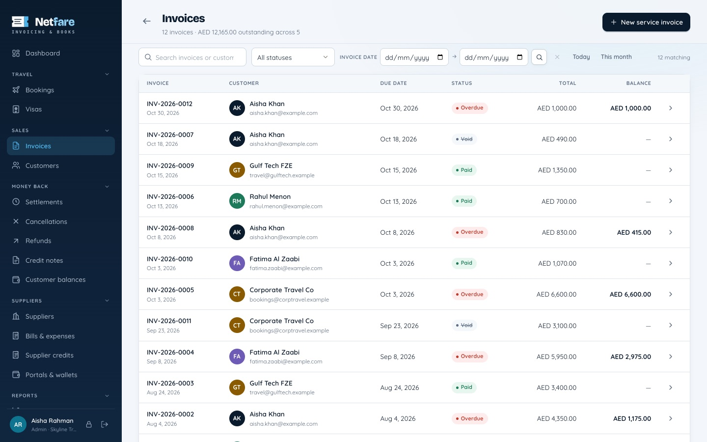
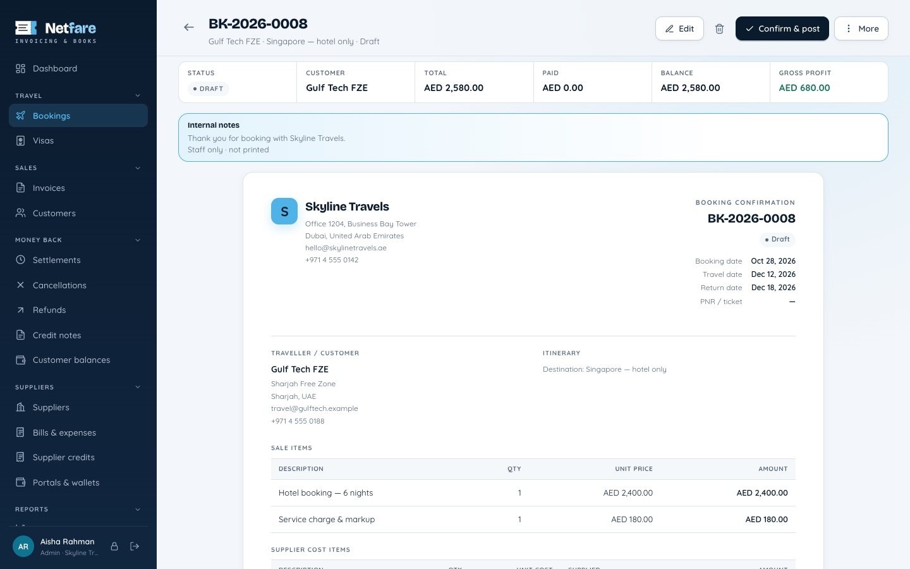
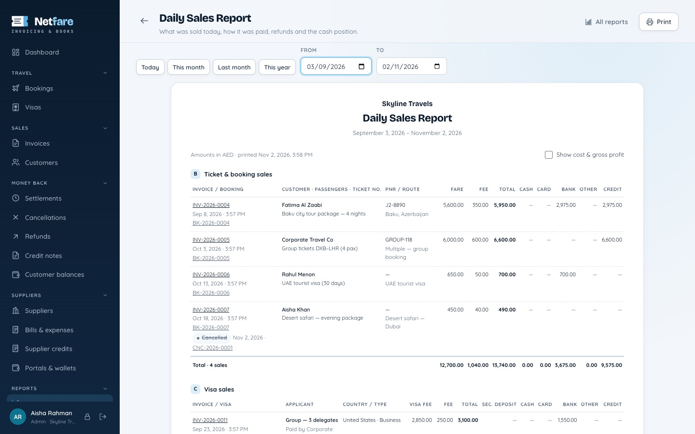
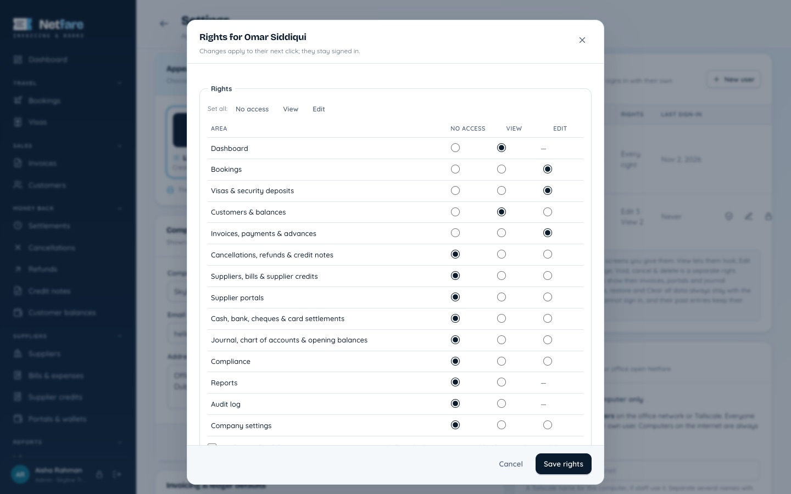

Bookings & visas
Tickets, hotels and packages with passengers and supplier costs; visa applications from draft to issued, with security deposits.
Free & open source · Version 1.0
Bookings, visas, invoices, refunds, supplier portals and the bank — with proper double-entry books underneath. Netfare runs on your own computer, so your customers' passports and your accounts stay with you.
For Mac (Apple Silicon and Intel) and Windows · AED · Free forever

Everything in one place
Everyday travel work on top; the books keep themselves underneath. Every sale, payment and refund posts its own balanced journal entry.
Tickets, hotels and packages with passengers and supplier costs; visa applications from draft to issued, with security deposits.
Invoices from bookings in one click, receipts, customer advances, payment links and card settlements with their fees.
Cancel a sale with charges kept, refund the customer or keep a credit note — the books and the daily sales report stay right.
Prepaid portal wallets and credit-settlement suppliers, top-ups, bills, supplier credits and reconciliation against the portal.
Bank charges, cash deposits, petty cash counts, post-dated cheques and bank reconciliation.
Daily sales report, profit & loss, balance sheet, trial balance, aging, booking and visa margins, portal wallets.
Eleven ledger checks compare every control account with the documents behind it, so a mistake shows up the same day.
Trade licence renewals, rent and other recurring costs, with reminders and bills created on time.
Automatic daily backups, a safety copy before every big change, and one-click download of the whole database.
Bookings
Sale and cost lines, passengers, supplier and portal, travel dates and the gross profit — then confirm and Netfare posts the invoice, the bill and the journal.

Daily sales report
Every ticket, visa and package sold in the period, how each was paid — cash, card, bank, credit — cancellations on their own line, and the cash position.

For your team
The admin adds staff in Settings and ticks what each one may do — no fixed roles to fit into.

How it works
No cloud account, no monthly fee, no customer data on someone else's server.
Everyone works on the same books at the same time; if two people change one record, nobody's work is overwritten.
MIT licence. Use it, change it, run it for as many agencies as you like. The code is on GitHub.
When a new version is out, the admin sees a notice in Netfare with what changed and a download button.
Download
The latest version for Mac and Windows. Free, no sign-up.
Not sure which Mac you have? Apple menu → About This Mac: "Chip: Apple M…" means Apple Silicon; "Processor: Intel" means Intel.
Questions
Yes. It is open source under the MIT licence: no fee, no subscription, no limit on users or agencies.
On the agency's main computer, in Netfare's own folder. Nothing is sent to us or to any cloud. Netfare makes automatic backups, and you can download the whole database at any time.
No. Netfare works offline. The internet is only used to check for new versions, and staff working from home need it to reach the office over Tailscale.
Netfare is not code-signed through Apple or Microsoft, so the first time they show a warning. Choose Open Anyway (Mac) or More info → Run anyway (Windows) once.
The admin sees a notice in Netfare when a new version is out, with what changed and a download button. Install the new version over the old one — your books are kept.
Not yet. Netfare is built for agencies that are not VAT-registered; amounts are in AED.